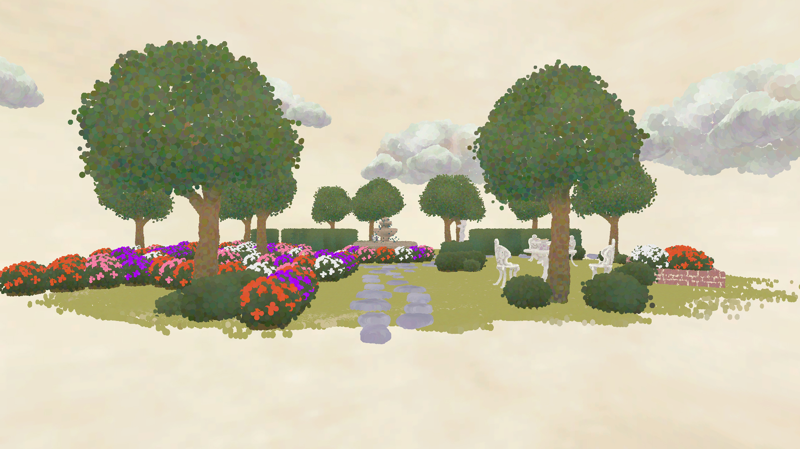

Power Mage

Power Mage is a fast-paced single-player 3D game for PC where you play as a powerful wizard in a magic castle, fight enemies to collect score and seek crystals to customize your spells.
I creating spell customization menu and spell modifiers for runtime.
Fast Flare

Fast Flare is fast paste mobile game developed in Unreal Engine 4.
I worked on gameplay elements like handling user inputs, adding object pooling into map piece generation and creating score system.
Sabreurs - A Noble Duel

Sabreurs is a complex player versus player fencing game created with Unity Engine.
I created controller handling and inputs, player movement, created a audio controller and handled UI menus.
I also implemented Steamworks (Steam SDK) to the project.
JANTOR

JANTOR was our entry to LudumDare47 that placed 13th in the jam and my first game made with GameMakerStudio2.
For JANTOR I created the loop system where player moves, and the live-like movement the loop has.
I also implemented JANTORS attacks, phases and the basic gameplay loop.
Dot Garden

Our entry to Global Game Jam 2021 - Pointillism style using shaders
I created the shader used for visualizing meshes using points
Included point size and color randomization per mesh
Transemission

Our entry to Global Game Jam 2018 - Rythm game with programmed background effect
I created a tool to get input from audiofiles to use on the background elements to amplify the rythm of songs